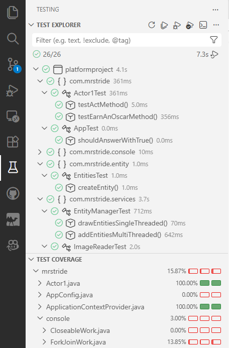

JUnit#
JUnit is a widely-adopted testing framework for Java that allows developers to write and run automated unit tests. A unit test is a small, focused test that verifies the correctness of a single unit of code. JUnit provides a structured way to organize tests, make assertions about expected behavior, and gain confidence that your code works correctly.
In this lesson we will be discussing JUnit 5 (also called Jupiter), the modern Java standard.
Testing Practices#
Before we dive into JUnit specifically, let’s discuss Unit Testing in general.
Quality Unit Tests#
Unit Tests should have characteristics make them effective and maintainable. The following help to ensure that tests provide value and don’t become a burden.
Independent: Each test should run in isolation without depending on other tests or shared state. Tests should be able to execute in any order without affecting each other. This prevents cascading failures and makes debugging easier.
Quick: Tests should execute rapidly (ideally in milliseconds). Slow tests discourage developers from running them frequently, reducing their effectiveness as a safety net during development. A full suite of Unit Tests[1] should take at most a few minutes.
Reliable: Tests should consistently pass when the code is correct and fail when it’s not. Flaky tests that pass or fail unpredictably erode confidence in the test suite.
Repeatable: Running the same test multiple times should produce the same result. Tests shouldn’t depend external factors like network connectivity, file system state, or random number generation.
Understandable: Test code should be clear and self-documenting. Method names should describe what is being tested and why. Complex setup or assertions should be well-commented.
Targeted: Each test should focus on one specific piece of functionality. When a test fails, you should immediately know what behavior is broken, making debugging straightforward and preventing the need to investigate multiple potential issues.
To achieve the above:
Test Behavior, Not Implementation: Focus on what the code should do, not how it does it. This makes tests more resilient to refactoring.
Use Meaningful Assertions: Don’t just assert that something isn’t null. Assert the specific values or conditions you care about.
Mock External Dependencies: This is perhaps the biggest win as it promotes speed, isolation, reliability, and repeatable tests. Use Mockito to isolate the code you’re testing from unreliable, slow or external dependencies like databases, APIs, or file systems.
Test more than just the Happy Path: Write tests for normal usage, but also test boundary conditions, null inputs, and error scenarios.
Following these principles leads to a test suite that developers trust and use regularly. When a test fails, you can be confident it’s indicating a real problem in the code, not a flaw in the test itself.
Bad Tests Get Turned Off
When a test fails too often, or inconsistently, or is too difficult to fix, developers take the shortcut of just turning it off.
Basic Structure#
Every JUnit test follows a predictable structure:
Arrange: Set up the objects and state needed for the test.
Act: Call the method or behavior you’re testing.
Assert: Check that the result matches your expectation.
Here’s a simple example:
import org.junit.jupiter.api.Test;
import static org.junit.jupiter.api.Assertions.*;
public class CalculatorTest {
@Test
void testAddition() {
// Arrange: Create the object to test
Calculator calc = new Calculator();
// Act: Perform the action
int result = calc.add(2, 3);
// Assert: Verify the result
assertEquals(5, result);
}
}
Test Names#
Test class names typically end with Test. Test method names should clearly describe what is being tested, often following the pattern test[MethodName][Scenario][ExpectedResult].
Clear names like these make it easy to understand what each test validates and why it might fail.
Good Practice
Each test method should test exactly one behavior or scenario. If you need to test multiple related scenarios, create separate test methods. This makes failures more informative and tests more maintainable.
// Good: Clear, focused, tests behavior
@Test
void testBankTransfer_insufficientFunds_throwsException() {
BankAccount from = new BankAccount(50);
BankAccount to = new BankAccount();
assertThrows(InsufficientFundsException.class, () -> {
BankService.transfer(from, to, 100);
});
}
// Avoid: Too broad, unclear intent
@Test
void testTransfer() {
BankAccount from = new BankAccount(50);
BankAccount to = new BankAccount();
assertTrue(from != null);
assertTrue(to != null);
// ... unclear assertions ...
}
Testing with Dependency Injection
JUnit works seamlessly with Dependency Injection. The best practice is to use constructor injection in your production code, which makes dependency wiring explicit and makes tests easier to write without requiring Spring.
For Spring-specific dependency injection in tests, see the Spring Boot lesson.
For a detailed discussion on dependency isolation techniques, see the Mockito lesson.
Quality vs Quantity#
While a poorly written test should be deleted, it is wrong to state:
Quality over Quantity
Developers are already reluctant to write tests. The vague slogan, “quality over quantity,” can inadvertently justify stopping early. The reality is that good code coverage genuinely requires a lot of tests, one per behavior, one per edge case, one per error scenario.
The proper slogan:
Quantity, done right, is quality.
The trick here is to know what “done right” means. Let’s dive into that a bit by looking at some anti-patterns.
Anti-Patterns#
assertNotNull(object): Creating an object and then asserting that it is not null is a test that asserts almost nothing. (These are written often in pursuit of code coverage.) A test that only checks “I got something back” won’t catch bugs in the actual data. Assert the specific values you care about.
Testing Multiple Behaviors in One Test: Cramming several assertions about unrelated things into a single test method makes failures hard to diagnose and violates the “one test per behavior” rule.
Testing Getters/Setters: Generally not worth it. These tests are a good example of where “quantity over quality” actually does apply. Time is better spent testing code that actually makes decisions such as conditionals, calculations, validation, and error handling. If the method has no branch or calculation in it, a test probably isn’t adding value.
Done Right
Test where bugs live.
JUnit#
Common Assertions#
JUnit provides a rich set of assertion methods to validate the code. Here are the most commonly used:
Assertion |
Purpose |
|---|---|
|
Verifies that two values are equal. |
|
Verifies that two values are not equal. |
|
Verifies that a condition is true. |
|
Verifies that a condition is false. |
|
Verifies that an object is null. |
|
Verifies that an object is not null. |
|
Verifies that an executable throws a specific exception. |
|
Verifies that an executable does not throw an exception. |
|
Explicitly fails the test with an optional message. |
Example using various assertions:
@Test
void testUserCreation() {
User user = new User("Alice", 30);
assertEquals("Alice", user.getName());
assertEquals(30, user.getAge());
assertNotNull(user); // somewhat useless test
assertTrue(user.isAdult());
}
@Test
void testInvalidAgeThrowsException() {
assertThrows(IllegalArgumentException.class, () -> {
new User("Bob", -5); // Negative age should throw
});
}
Test Lifecycle and Annotations#
JUnit provides several annotations to run code at specific points in a test’s lifecycle and to mark which methods are tests.
public class UserServiceTest {
private UserService service;
private UserRepository repository;
@BeforeEach
void setUp() {
// This runs before each test method
repository = new UserRepository();
service = new UserService(repository);
}
@AfterEach
void tearDown() {
// This runs after each test method
repository.clear();
}
@BeforeAll
static void setupAll() {
// This runs once before any tests in this class
System.out.println("Starting UserServiceTest suite");
}
@AfterAll
static void tearDownAll() {
// This runs once after all tests in this class
System.out.println("Completed UserServiceTest suite");
}
@Test
void testCreateUser() {
User user = service.createUser("Charlie");
assertNotNull(user);
}
@Test
void testFindUser() {
User user = service.createUser("Diana");
User found = service.findUserByName("Diana");
assertEquals(user, found);
}
}
Annotation |
Frequency |
Purpose |
|---|---|---|
|
Multiple times |
Runs before each test method; use for setup. |
|
Multiple times |
Runs after each test method; use for cleanup. |
|
Once |
Runs once before any test in the class; must be static. |
|
Once |
Runs once after all tests in the class; must be static. |
The @Test annotation is the key marker that tells JUnit which methods to execute. JUnit will automatically discover those methods, so you do not need to register them manually. It scans the classpath for test classes and then identifies @Test methods at runtime.
Good Practice
Use @BeforeEach for test-specific setup. Use @BeforeAll sparingly—only for expensive, shared initialization. Keep tests independent so one failure does not create hidden dependencies for the next test.
JUnit Integrations#
In VS Code, JUnit tests are most easily run using the Java Extension Pack and the Java Test Runner extension. These tools provide a Test Explorer sidebar, run/debug icons in the editor gutter, and a clean workflow for executing individual tests, classes, or entire suites.
Open the Test Explorer to browse discovered tests.
Use the run/debug icons next to
@Testmethods and test classes.Re-run failed tests directly from the dashboard.
JUnit discovers tests by finding methods annotated with @Test. VS Code shows those methods in the Test Explorer, and clicking a failed test will usually jump you directly to the failing assertion.
Test Results and Reporting in VS Code#
The VS Code test dashboard shows:
Pass/Fail summary: Counts of passed, failed, and skipped tests.
Execution time: How long each test and the entire suite took.
Failure details: Stack traces and error messages for failed tests.
Status icons: Green checks for passes and red X’s for failures.
Code Coverage#
Code coverage measures how much of your production code is exercised by your tests. In VS Code, coverage can be visualized by going to the Testing Dashboard.
Coverage reports typically show:
Line Coverage: Percentage of executable lines executed during testing.
Class/Method Coverage: Which classes and methods are covered.
Branch Coverage: Percentage of decision points tested.

The above shows a Dashboard of Unit Tests for a project in VS Code. The top part shows a hierarchical organization of the tests by file along with the amount of time the tests took. At the top are some icons that allow you to execute the tests, debug the tests, and to run code coverage. The bottom part shows the Test Coverage for the files in the application (not just the Test File) and how many lines, methods, and branches are covered in that file.
Spring Boot Integration#
While unit tests should typically avoid Spring for speed and simplicity, sometimes you need Spring Boot to verify component wiring and configuration. In those cases, use @SpringBootTest.
@SpringBootTest tells Spring Boot to start a full application context for your test. That means:
Spring Boot auto-configuration is applied.
Component scanning registers real beans such as
@Componentand@Service.@Autowiredcan inject real beans into the test.Configuration properties and custom
@Configurationclasses are loaded.Spring-managed features like AOP[2] become available.
@SpringBootTest
public class RepositoryIntegrationTest {
@Autowired
private UserRepository userRepository;
@Test
void testSaveAndRetrieveUser() {
User user = new User("Eve", 28);
userRepository.save(user);
User retrieved = userRepository.findByName("Eve");
assertEquals(user, retrieved);
}
}
Use @SpringBootTest only when you genuinely need the full Spring context. For most unit tests, avoid it to keep tests fast and isolated.
What’s so Important?  #
#
A well-written unit test should be independent, fast, reliable, repeatable, understandable, and targeted.
Use mocking to remove external dependencies and to promote a quality test.
Follow the prescribed structure of a test: arrange, act, assert.
Create quality tests, but note that Quantity, done right, is quality. To achieve “done right,” test where bugs live.
Annotate your test methods with
@Test.
Footnotes#
[1] Types of Testing
There are different levels of testing. These levels go from testing small units of code to testing an entire application from the user’s perspective.
Unit Testing: Tests individual methods or classes in isolation to verify their correctness.
Functional Testing: The focus is on specifications and features. These tests validate features (functions) of the application against the requirements.
Integration Testing: The focus is on assuring that different components or modules work together properly when combined. Mocking is not used here because the point is to verify that two or more components work together.
System Testing: Tests an entire system as a whole to verify it meets all specified requirements.
User Acceptance Testing: Confirms the system meets user needs and is ready for production deployment.
[2] Aspect-Oriented Programming (AOP)
AOP enables features to be sprinkled across classes horizontally instead of vertically. (Note that “horizontal” means across many unrelated classes, in contrast to inheritance which chains “vertically.”) We call these cross-cutting features. AOP requires a framework such as Spring or AspectJ to manage classes and to “weave” the cross-cutting features into the classes using annotations. These features are implemented as reusable modules called aspects, each combining a pointcut (which declares where to apply the behavior) and advice (which declares what to do).
AOP allows us to give a class additional functionality without inheritance.
Here is an example:
// Create an Annotation that will tag code we want to be enhanced with our cross-cutting feature
@Target(ElementType.METHOD)
@Retention(RetentionPolicy.RUNTIME)
public @interface LogExecutionTime {
boolean useMs() default true;
}
// Create an Aspect that implements the functionality
@Aspect
@Component
public class ExecutionTimeAspect {
@Around("@annotation(LogExecutionTime)")
public Object logExecutionTime(ProceedingJoinPoint joinPoint) throws Throwable {
Logger logger = LogManager.getLogger("PerformanceFile");
MethodSignature signature = (MethodSignature) joinPoint.getSignature();
Method method = signature.getMethod();
LogExecutionTime logExecutionTime = method.getAnnotation(LogExecutionTime.class);
boolean useMs = logExecutionTime.useMs();
// capture start and end times using the preferred units
long start = useMs ? System.currentTimeMillis() : System.nanoTime();
// This will execute the method we are timing
Object proceed = joinPoint.proceed();
long end = useMs ? System.currentTimeMillis() : System.nanoTime();
long executionTime = end - start;
logger.info("{} executed in {} {}", joinPoint.getSignature(), executionTime, useMs ? "ms" : "nanoseconds");
return proceed;
}
}
@Component
public class UsesTimer {
@LogExecutionTime
public void doWork() {
// execution time will be measured and logged
}
}